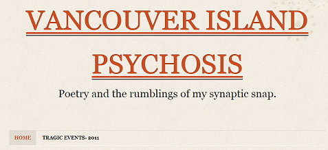
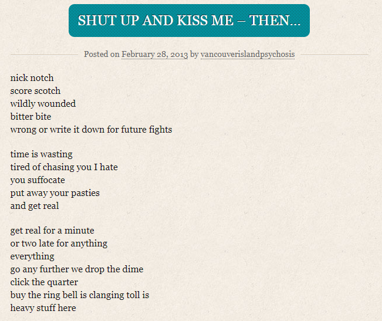

Knoweth Thyne Catlady
November 2nd, 2020
Yesterday, when I was writing up the preliminary story on the probably gay-op being done to our heroic biker in Victoria, which you can read here, I flipped through the responses on twitter from the not entirely censored public yet, and it’s about what you’d expect. For reference, here is the original tweet by the Victoria Police Department.
The responses are mostly our guys, or adjacent, with a few screeching cat ladies onboard. Here is one particularly excellent exchange.
So I took it upon myself to go and look up whomever this stupid cunt was, and I was not disappointed. Here we see “1RoguePoet” in all her middle aged glory.
Anyway, I thought to myself, I just absolutely need to see this dumb cunts poetry, so I clicked on that link. I was not disappointed.

Vancouver. Island. Psychosis. At this point I’m not sure it’s possible to humiliate such a creature. When you’re displaying your psychosis for the entire world to see, there’s not much left to talk about.
That entire website has just a few posts, the last of which came on February 28th, 2013, more than seven full years ago.

Oh dear god, she thinks it’s clever to switch right to write, for absolutely zero fucking reason. Later on, in the third stanza, she switches too, becoming two, which doesn’t make any fucking sense, and would be conceived as a spelling error had she not already proven that she thought she was being clever.
This shit is so fucking bad, and then it keeps going for like 10 more stanzas. You can read this all here.
Actually, I’d strongly recommend that you go do that. Then go take a quick skim through her twitter feed here. I’ll post one pic now. Notice the complete lack of any likes on any of her tweets. What we have here is a sad lonely catlady, a spinster in training, whiling out her years all alone, tweeting to no one.
Jesus, she’s depressing. I know the tactic of pretending to have pity as a means of dissing someone, but I genuinely feel this now. I wonder what she dreamed of being when she grew up. I don’t think it was a middle aged catlady pretending to believe in the “Muh Russia,” hoax shit in order to fill her day with anything other than brutal grey loneliness. Sad.
Maybe I should write a poem about that? In her style that is.
TDC_ARTICLE_START
Womb dust
Mind rust
Poetry not snappy
Vagina not happy
-
Politics NPC
No one likes my twee-
ts
Please read my quartet of poems
FOUR a while
-
I need a man
I have no plan
I'm going to die
Alone I cry
TDC_ARTICLE_STOP
Somehow even after trying to make a shitty poem, this is actually superior to hers. Because she's a fucking idiot.
I hope that some good can come out of this creatures wasted wretched life, in that she might serve as an example to young women of the worst that can happen.